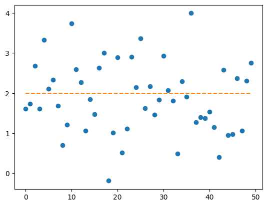
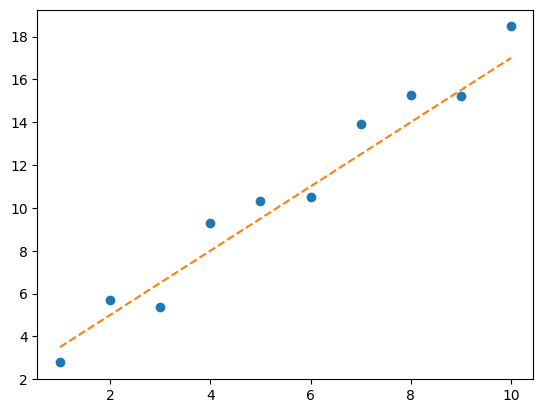
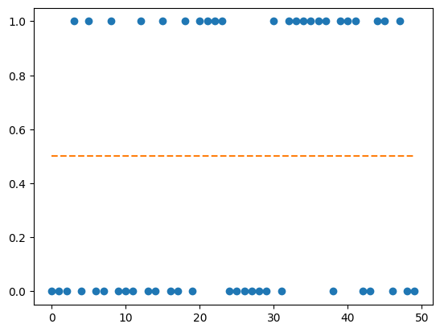
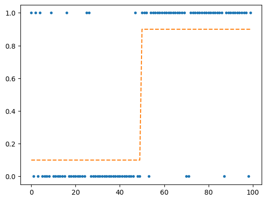
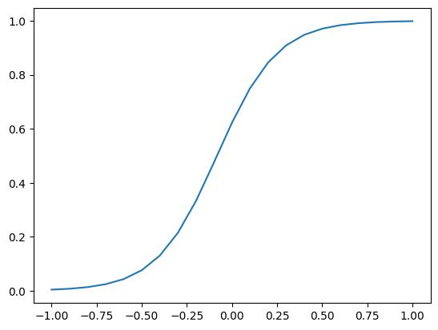
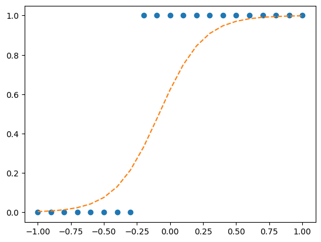

import torch
import matplotlib.pyplot as plt02wk: torch (2)

1. 강의영상
2. Imports
3. torch
E. 차원, 전환
a = torch.tensor([[1,2,3,4],[2,2,0,1], [0,1,-1,0], [3,1,-1,3]])
atensor([[ 1, 2, 3, 4],
[ 2, 2, 0, 1],
[ 0, 1, -1, 0],
[ 3, 1, -1, 3]])- 미묘한차이
a[[0],:] # 1x4 matrix 형태, 2차원tensor([[1, 2, 3, 4]])a[0,:] # length-4 vector 형태, 1차원tensor([1, 2, 3, 4])a[:,[0]] # 4x1 matrix 형태, 2차원tensor([[1],
[2],
[0],
[3]])a[:,0] # length-4 vector 형태, 1차원tensor([1, 2, 0, 3])a[0,0] # shape이 없는 형태, 0차원tensor(1)- 0차원, 1차원, 2차원….
torch.tensor([[1,2,3],[2,3,4]]), torch.tensor([[1,2,3],[2,3,4]]).shape # 2차원(tensor([[1, 2, 3],
[2, 3, 4]]),
torch.Size([2, 3]))torch.tensor([[1,2,3]]), torch.tensor([[1,2,3]]).shape # 2차원(tensor([[1, 2, 3]]), torch.Size([1, 3]))torch.tensor([[1],[2],[3]]), torch.tensor([[1],[2],[3]]).shape # 2차원(tensor([[1],
[2],
[3]]),
torch.Size([3, 1]))torch.tensor([1,2,3]), torch.tensor([1,2,3]).shape # 1차원(tensor([1, 2, 3]), torch.Size([3]))torch.tensor([3]), torch.tensor([3]).shape # 1차원(tensor([3]), torch.Size([1]))torch.tensor(3), torch.tensor(3).shape # 0차원(tensor(3), torch.Size([]))torch.tensor([[3]]), torch.tensor([[3]]).shape # 2차원(tensor([[3]]), torch.Size([1, 1]))- reshape
a = torch.tensor([1,2,3,4,5,6])
atensor([1, 2, 3, 4, 5, 6])a.reshape(1,6)tensor([[1, 2, 3, 4, 5, 6]])a.reshape(6,1)tensor([[1],
[2],
[3],
[4],
[5],
[6]])a.reshape(3,2)tensor([[1, 2],
[3, 4],
[5, 6]])a.reshape(2,3)tensor([[1, 2, 3],
[4, 5, 6]])# reshape 고급
a = torch.tensor([[1,2,3],[4,5,6]])
atensor([[1, 2, 3],
[4, 5, 6]])task1: [6,1]로 만들기
a.reshape(6,1) # 방법1tensor([[1],
[2],
[3],
[4],
[5],
[6]])a.reshape(6,-1) # 방법2tensor([[1],
[2],
[3],
[4],
[5],
[6]])task2: [3,2]로 만들기
a.reshape(3,2) # 방법1tensor([[1, 2],
[3, 4],
[5, 6]])a.reshape(3,-1) # 방법2tensor([[1, 2],
[3, 4],
[5, 6]])task3: [6]로 만들기
a.reshape(6)tensor([1, 2, 3, 4, 5, 6])a.reshape(-1)tensor([1, 2, 3, 4, 5, 6])#
- 전치행렬 만들어보기
a = torch.tensor([[1,2,3],[2,3,4]])
atensor([[1, 2, 3],
[2, 3, 4]])a.T # 트랜스포즈하는 방법1tensor([[1, 2],
[2, 3],
[3, 4]])a.reshape(3,2) # 트랜스포즈실패: 내마음대로 안되네..tensor([[1, 2],
[3, 2],
[3, 4]])torch.einsum('ij -> ji',a) # 트랜스포즈하는 방법2tensor([[1, 2],
[2, 3],
[3, 4]])a.permute(1,0) # 트랜스포즈하는 방법3tensor([[1, 2],
[2, 3],
[3, 4]])- 벡터, col-vec, row-vec, matrix
(1) 길이가 3인 벡터
- \({\bf x}=[1,2,3]\)
(2) 차원이 (1,3)인 matrix = 길이가 3인 row-vec
- \({\bf x}=\begin{bmatrix} 1 & 2 & 3 \end{bmatrix}\)
(3) 차원이 (3,1)인 matrix = 길이가 3인 col-vec
- \({\bf x}=\begin{bmatrix} 1 \\ 2 \\ 3 \end{bmatrix}=\begin{bmatrix} 1 & 2 & 3 \end{bmatrix}^\top\)
참고
- 수학에서 벡터 \({\bf a},{\bf b}\)는 보통 특별한 언급이 없으면 column-vector로 인식하는 경우가 많다. 이럴경우에 두 벡터의 내적은 \({\bf a}^\top {\bf b}\)와 같이 표현된다.
- ref: https://en.wikipedia.org/wiki/Dot_product
- .item()
a = torch.tensor(32)
atensor(32)a # 0차원텐서tensor(32)a.item() # int형변수32F. @의 유연성
- 아래의 행렬곱은 연산가능함.
- (2,2) @ (2,1) -> (2,1)
- (1,2) @ (2,2) -> (1,2)
a = torch.tensor([1,2,3,4]).reshape(2,2)
b = torch.tensor([1,2]).reshape(2,1)
a@btensor([[ 5],
[11]])a = torch.tensor([1,2,3,4]).reshape(2,2)
b = torch.tensor([1,2]).reshape(1,2)
b@atensor([[ 7, 10]])- 당연히 아래의 행렬곱은 연산불가능함.
- (2,1) @ (2,2) -> X
- (2,2) @ (1,2) -> X
a = torch.tensor([1,2,3,4]).reshape(2,2)
b = torch.tensor([1,2]).reshape(2,1)
b@a--------------------------------------------------------------------------- RuntimeError Traceback (most recent call last) /tmp/ipykernel_3892/4182149175.py in <cell line: 0>() 1 a = torch.tensor([1,2,3,4]).reshape(2,2) 2 b = torch.tensor([1,2]).reshape(2,1) ----> 3 b@a RuntimeError: mat1 and mat2 shapes cannot be multiplied (2x1 and 2x2)
a = torch.tensor([1,2,3,4]).reshape(2,2)
b = torch.tensor([1,2]).reshape(1,2)
a@b--------------------------------------------------------------------------- RuntimeError Traceback (most recent call last) /tmp/ipykernel_3892/3051524687.py in <cell line: 0>() 1 a = torch.tensor([1,2,3,4]).reshape(2,2) 2 b = torch.tensor([1,2]).reshape(1,2) ----> 3 a@b RuntimeError: mat1 and mat2 shapes cannot be multiplied (2x2 and 1x2)
- 그렇다면 아래는 어떨까?
- 2 @ (2,2) -> ??
a = torch.tensor([1,2,3,4]).reshape(2,2)
b = torch.tensor([1,2])b @ a # 마치 b를 1x2 matrix로 해석하고 연산한뒤 그 결과를 1차원으로 다시 만든 느낌tensor([ 7, 10])(b.reshape(1,2) @ a).reshape(-1)tensor([ 7, 10])a @ b # 마치 b를 2x1 matrix로 해석하고 연산한뒤 그 결과를 1차원으로 다시 만든 느낌tensor([ 5, 11])# 내적의 계산: \({\bf a}=[1,2,3]\), \({\bf b}=[4,5,6]\) 일 경우 \({\bf a} \cdot {\bf b}\)를 계산해보자.
계산방법1
a = torch.tensor([1,2,3])
b = torch.tensor([4,5,6])(a*b).sum()tensor(32)계산방법2
a = torch.tensor([1,2,3]).reshape(3,1)
b = torch.tensor([4,5,6]).reshape(3,1)
a.T @ btensor([[32]])계산방법3
a = torch.tensor([1,2,3])
b = torch.tensor([4,5,6])
a @ btensor(32)- 좋은건가? 아니면 헷갈리는건가?
- 아는상태에서 쓰면
@의 유연성은 편리한 기능인데, 모르는 상태에서 쓰면 혼란스러울 수 있음.
- 결론: @의 유연성으로 인해서 불편할때도 있고, 편리할때도 있다.
G. 다양한 array 생성
arange
- 정수배열을 생성
torch.arange(10) # torch.arange(0,10)에서 0이 생략된 버전tensor([0, 1, 2, 3, 4, 5, 6, 7, 8, 9])- 위의코드는 사실 아래와 같음.
torch.arange(0,10) # 0부터 시작해서 10까지 정수배열을 만드는데, 끝점인 10은 제외tensor([0, 1, 2, 3, 4, 5, 6, 7, 8, 9])- 시작점을 다르게 할 수 있음.
torch.arange(1,10)tensor([1, 2, 3, 4, 5, 6, 7, 8, 9])- 간격을 다르게 할 수도 있음.
torch.arange(1,10,2)tensor([1, 3, 5, 7, 9])linspace
- 등간격으로 숫자생성
torch.linspace(0,1,11)tensor([0.0000, 0.1000, 0.2000, 0.3000, 0.4000, 0.5000, 0.6000, 0.7000, 0.8000,
0.9000, 1.0000])- 물론 linspace를 쓰지 않고 아래와 같이 만들어도 상관없긴함.
torch.arange(1,11)/10tensor([0.1000, 0.2000, 0.3000, 0.4000, 0.5000, 0.6000, 0.7000, 0.8000, 0.9000,
1.0000])zeros, ones
- 모두 0이 채워진 배열생성
torch.zeros(5)tensor([0., 0., 0., 0., 0.])torch.arange(5)*0.0 # 물론이렇게 해도 괜찮음.tensor([0., 0., 0., 0., 0.])- 0만 채워진 2차원배열(행렬)을 생성할 수도 있음.
torch.zeros((5,5))tensor([[0., 0., 0., 0., 0.],
[0., 0., 0., 0., 0.],
[0., 0., 0., 0., 0.],
[0., 0., 0., 0., 0.],
[0., 0., 0., 0., 0.]])- 차원은 (5,5)로 전달하든 [5,5]로 전달하든 결과는 같음.
torch.zeros([5,5])tensor([[0., 0., 0., 0., 0.],
[0., 0., 0., 0., 0.],
[0., 0., 0., 0., 0.],
[0., 0., 0., 0., 0.],
[0., 0., 0., 0., 0.]])- ones도 마찬가지
torch.ones(5), torch.ones((5,5)), torch.ones([5,5])(tensor([1., 1., 1., 1., 1.]),
tensor([[1., 1., 1., 1., 1.],
[1., 1., 1., 1., 1.],
[1., 1., 1., 1., 1.],
[1., 1., 1., 1., 1.],
[1., 1., 1., 1., 1.]]),
tensor([[1., 1., 1., 1., 1.],
[1., 1., 1., 1., 1.],
[1., 1., 1., 1., 1.],
[1., 1., 1., 1., 1.],
[1., 1., 1., 1., 1.]]))rand
- 0~1 사이에서 난수를 뽑아서 텐서를 채우는 방법
torch.rand(10)tensor([0.8549, 0.5509, 0.2868, 0.2063, 0.4451, 0.3593, 0.7204, 0.0731, 0.9699,
0.1078])torch.rand((5,2))tensor([[0.8829, 0.4132],
[0.7572, 0.6948],
[0.5209, 0.5932],
[0.8797, 0.6286],
[0.7653, 0.1132]])- 약간의 응용
1~2 사이에서 10개의 난수를 뽑아서 텐서를 채워보자.
torch.rand(10) + 1tensor([1.8559, 1.6721, 1.6267, 1.5691, 1.7437, 1.9592, 1.3887, 1.2214, 1.3742,
1.1953])0~2 사이에서 10개의 난수를 뽑아서 텐서를 채워보자.
torch.rand(10) * 2tensor([1.4810, 0.5058, 0.4663, 1.8628, 1.9151, 1.1150, 0.8268, 0.8709, 1.4737,
0.0662])1~3 사이에서 10개의 난수를 뽑아서 텐서를 채워보자.
torch.rand(10) * 2 + 1tensor([1.1828, 2.7988, 2.9872, 1.9406, 1.2098, 2.0273, 1.5348, 1.9981, 2.4895,
2.4427])randn
ref: https://docs.pytorch.org/docs/stable/generated/torch.randn.html
- \(N(0,1)\)에서 10개의 난수 생성
torch.randn(10)tensor([-0.4225, -0.0832, -0.9837, -1.2494, -0.1883, 0.2827, 0.1305, 0.3303,
-0.0773, -0.9224])- \(N(0,2^2)\)에서 10개의 난수 생성
torch.randn(10)*2tensor([-3.7882, 2.0113, -1.3897, 1.8125, 0.2145, 1.2250, 0.6593, -1.7526,
-3.3536, -1.4494])- \(N(1,2^2)\)에서 10개의 난수 생성
torch.randn(10)*2 + 1tensor([ 2.9268, 1.2685, 2.0971, 5.2697, -0.7563, -3.1652, 4.6634, -0.1071,
3.0790, -1.5202])# 예제 – 다음 모형에서 관측값을 생성하라.
\[y_i = 2+ \epsilon_i, \quad \epsilon_i \overset{i.i.d.}{\sim} N(0,1), \quad i=1,2,\dots,50\]
(풀이)
eps = torch.randn(50)
y = 2 + eps
ytensor([ 1.6162, 1.7325, 2.6794, 1.6053, 3.3272, 2.1106, 2.3374, 1.6799,
0.7020, 1.2127, 3.7422, 2.5880, 2.2755, 1.0664, 1.8473, 1.4700,
2.6340, 3.0036, -0.1881, 1.0073, 2.8885, 0.5133, 1.1102, 2.9005,
2.1451, 3.3705, 1.6241, 2.1689, 1.4585, 1.8395, 2.9327, 2.0649,
1.8059, 0.4860, 2.2961, 1.9063, 3.9939, 1.2799, 1.3948, 1.3761,
1.5297, 1.1518, 0.4047, 2.5859, 0.9465, 0.9732, 2.3708, 1.0671,
2.3073, 2.7593])plt.plot(y,'o')
plt.plot(torch.ones(50)*2,'--')
#
# 예제 – \({\bf x} = [1,2,\cdots,10]\)에 대하여, 다음 모형에서 관측값을 생성하라.
\[y_i = 2 + 1.5 x_i + \epsilon_i, \quad \epsilon_i \overset{i.i.d}{\sim} N(0,1),\quad i=1,2,\dots,10\]
x = torch.arange(1,11)
eps = torch.randn(10)
y = 2 + 1.5*x + eps
ytensor([ 2.7808, 5.7129, 5.3665, 9.2743, 10.3017, 10.5058, 13.8967, 15.2540,
15.2132, 18.4714])plt.plot(x,y,'o')
plt.plot(x,2+1.5*x,'--')
#
bernoulli
ref: https://docs.pytorch.org/docs/stable/generated/torch.bernoulli.html
- 사용시 주의점: 아래와 같이 1이 나올 확률에 해당하는 값을 꼭 tensor로 전달해야함.
torch.bernoulli(torch.tensor(0.5))tensor(1.)귀찮다고 아래와 같이 입력하면 에러가 발생한다.
torch.bernoulli(0.5)--------------------------------------------------------------------------- TypeError Traceback (most recent call last) /tmp/ipykernel_3892/1480675378.py in <cell line: 0>() ----> 1 torch.bernoulli(0.5) TypeError: bernoulli(): argument 'input' (position 1) must be Tensor, not float
# 예제 – 다음 모형에서 관측값을 생성하라.
\[y_i \overset{i.i.d.}{\sim} \text{Bernoulli}(0.5), \quad i=1,2,\dots,100\]
p = torch.zeros(50) + 0.5
y = torch.bernoulli(p)
ytensor([0., 0., 0., 1., 0., 1., 0., 0., 1., 0., 0., 0., 1., 0., 0., 1., 0., 0.,
1., 0., 1., 1., 1., 1., 0., 0., 0., 0., 0., 0., 1., 0., 1., 1., 1., 1.,
1., 1., 0., 1., 1., 1., 0., 0., 1., 1., 0., 1., 0., 0.])plt.plot(y, 'o')
plt.plot(p, '--')
(별해): 이런식으로 할 수도 있어요
y = (torch.rand(50) < 0.5).float()
ytensor([0., 1., 1., 1., 0., 1., 1., 0., 0., 0., 1., 1., 0., 1., 1., 1., 0., 1.,
1., 1., 1., 0., 0., 0., 0., 1., 1., 1., 1., 1., 1., 0., 1., 1., 1., 1.,
1., 0., 0., 1., 0., 1., 0., 0., 0., 1., 0., 1., 1., 1.])#
# 예제 – 다음 모형에서 관측값을 생성하라.
\[y_i=\overset{i.i.d.}{\sim} \text{Bernoulli}(p_i),\quad p_i = \begin{cases} 0.1 & i=1,2,\dots,50 \\ 0.9 & i=51,52,\dots,100\end{cases}\]
(풀이)
p = torch.tensor([0.1] * 50 + [0.9] * 50)
y = torch.bernoulli(p)
ytensor([1., 0., 1., 0., 1., 0., 0., 0., 0., 1., 0., 0., 0., 0., 0., 0., 1., 0.,
0., 0., 0., 0., 0., 0., 0., 1., 1., 0., 0., 0., 0., 0., 0., 0., 0., 0.,
0., 0., 0., 0., 0., 0., 0., 0., 0., 0., 0., 1., 0., 0., 1., 1., 1., 0.,
1., 1., 1., 1., 1., 1., 1., 1., 1., 1., 1., 1., 1., 1., 1., 1., 0., 0.,
1., 1., 1., 1., 1., 1., 1., 1., 1., 1., 1., 1., 1., 1., 1., 0., 1., 1.,
1., 1., 1., 1., 1., 1., 1., 1., 0., 1.])plt.plot(y,'.')
plt.plot(p,'--')
# 예제 – \({\bf x} = [-1.0, -0.9, \dots, 0.9, 1.0]\) 일떄, 다음 모형에서 관측값을 생성하라.
\[y_i \overset{i.i.d.}{\sim}\text{Bernoulli}(p_i), \quad p_i = \frac{\exp(6x_i + 0.5)}{\exp(6x_i+0.5)+1}\]
(풀이)
x = torch.arange(-10,11) / 10
p = torch.exp(6*x + 0.5) / (torch.exp(6*x+0.5) + 1)
plt.plot(x,p)
y = torch.bernoulli(p)
ytensor([0., 0., 0., 0., 0., 0., 0., 0., 1., 1., 1., 1., 1., 1., 1., 1., 1., 1.,
1., 1., 1.])plt.plot(x,y,'o')
plt.plot(x,p,'--')
#
manual_seed
- 아래를 여러번 실험해보자. –> 결과가 항상 바뀜
torch.rand(10)tensor([0.1449, 0.9635, 0.0904, 0.1700, 0.5987, 0.6466, 0.9446, 0.5025, 0.8377,
0.3333])- 이번에는 아래를 여러번 실행해보자 –> 결과가 바뀌지 않음. (결과를 바꾸려면 seed를 바꿔야한다)
torch.manual_seed(7)
torch.rand(10)tensor([0.5349, 0.1988, 0.6592, 0.6569, 0.2328, 0.4251, 0.2071, 0.6297, 0.3653,
0.8513])H. axis
concat
- 기본예제
a = torch.tensor([1,2])
b = -atorch.concat([a,b])tensor([ 1, 2, -1, -2])- 응용
a = torch.tensor([1,2])
b = -a
c = torch.tensor([3,4,5])torch.concat([a,b,c])tensor([ 1, 2, -1, -2, 3, 4, 5])- 지금까지는 딱히 concat의 메티르가 없어보임.
- a,b,c가 모두 리스트였다면 a+b+c하면 가능한 기능이니까.
- 2d array에 적용해보자.
a = torch.arange(4).reshape(2,2)
b = -atorch.concat([a,b]) # torch.concat([a,b], axis=0) 의 생략버전tensor([[ 0, 1],
[ 2, 3],
[ 0, -1],
[-2, -3]])- 옆으로 붙이고 싶다면??
torch.concat([a,b], axis=1)tensor([[ 0, 1, 0, -1],
[ 2, 3, -2, -3]])- 위의 코드에서 axis=1이 의미하는게 뭘까? 그것을 알아보기 위해 axis=0, axis=2등을 입력해보자..
torch.concat([a,b], axis=0) # 아까 torch.concat([a,b])이거랑 결과가 같음.tensor([[ 0, 1],
[ 2, 3],
[ 0, -1],
[-2, -3]])torch.concat([a,b], axis=2) # 이런건 없음..--------------------------------------------------------------------------- IndexError Traceback (most recent call last) /tmp/ipykernel_3892/3346697295.py in <cell line: 0>() ----> 1 torch.concat([a,b], axis=2) # 이런건 없음.. IndexError: Dimension out of range (expected to be in range of [-2, 1], but got 2)
- axis의 의미가 뭔지 아직은 잘 모르겠음. 예제를 좀더 살펴보자.
a = torch.arange(24).reshape(2,3,4)
a # 3차원 arraytensor([[[ 0, 1, 2, 3],
[ 4, 5, 6, 7],
[ 8, 9, 10, 11]],
[[12, 13, 14, 15],
[16, 17, 18, 19],
[20, 21, 22, 23]]])b = -a
btensor([[[ 0, -1, -2, -3],
[ -4, -5, -6, -7],
[ -8, -9, -10, -11]],
[[-12, -13, -14, -15],
[-16, -17, -18, -19],
[-20, -21, -22, -23]]])torch.concat([a,b],axis=0)tensor([[[ 0, 1, 2, 3],
[ 4, 5, 6, 7],
[ 8, 9, 10, 11]],
[[ 12, 13, 14, 15],
[ 16, 17, 18, 19],
[ 20, 21, 22, 23]],
[[ 0, -1, -2, -3],
[ -4, -5, -6, -7],
[ -8, -9, -10, -11]],
[[-12, -13, -14, -15],
[-16, -17, -18, -19],
[-20, -21, -22, -23]]])torch.concat([a,b],axis=1)tensor([[[ 0, 1, 2, 3],
[ 4, 5, 6, 7],
[ 8, 9, 10, 11],
[ 0, -1, -2, -3],
[ -4, -5, -6, -7],
[ -8, -9, -10, -11]],
[[ 12, 13, 14, 15],
[ 16, 17, 18, 19],
[ 20, 21, 22, 23],
[-12, -13, -14, -15],
[-16, -17, -18, -19],
[-20, -21, -22, -23]]])torch.concat([a,b],axis=2)tensor([[[ 0, 1, 2, 3, 0, -1, -2, -3],
[ 4, 5, 6, 7, -4, -5, -6, -7],
[ 8, 9, 10, 11, -8, -9, -10, -11]],
[[ 12, 13, 14, 15, -12, -13, -14, -15],
[ 16, 17, 18, 19, -16, -17, -18, -19],
[ 20, 21, 22, 23, -20, -21, -22, -23]]])- 이번에는
axis=2까지 동작함.
torch.concat([a,b],axis=3)--------------------------------------------------------------------------- IndexError Traceback (most recent call last) /tmp/ipykernel_3892/1247073346.py in <cell line: 0>() ----> 1 torch.concat([a,b],axis=3) IndexError: Dimension out of range (expected to be in range of [-3, 2], but got 3)
- 뭔가 나름의 방식으로 합쳐지는데 원리가 뭘끼?
(분석1) – torch.concat([a,b],axis=0)
a = torch.arange(24).reshape(2,3,4)
b = -aa.shape, b.shape, torch.concat([a,b],axis=0).shape(torch.Size([2, 3, 4]), torch.Size([2, 3, 4]), torch.Size([4, 3, 4]))- 첫번째 차원이 바뀌었다 –> 첫번째 축(
axis)이 바뀌었다. –>axis=0에 해당하는 축이 바뀌었다.
(분석2) – torch.concat([a,b],axis=1)
a = torch.arange(24).reshape(2,3,4)
b = -aa.shape, b.shape, torch.concat([a,b],axis=1).shape(torch.Size([2, 3, 4]), torch.Size([2, 3, 4]), torch.Size([2, 6, 4]))- 두번째 차원이 바뀌었다 –> 두번째 축(
axis)이 바뀌었다. –>axis=1에 해당하는 축이 바뀌었다.
(분석3) – torch.concat([a,b],axis=2)
a = torch.arange(24).reshape(2,3,4)
b = -aa.shape, b.shape, torch.concat([a,b],axis=2).shape(torch.Size([2, 3, 4]), torch.Size([2, 3, 4]), torch.Size([2, 3, 8]))- 세번째 차원이 바뀌었다 –> 세번째 축(
axis)이 바뀌었다. –>axis=2에 해당하는 축이 바뀌었다.
(분석4) – torch.concat([a,b],axis=3)
a = torch.arange(24).reshape(2,3,4)
b = -aa.shape, b.shape, torch.concat([a,b],axis=3).shape--------------------------------------------------------------------------- IndexError Traceback (most recent call last) /tmp/ipykernel_3892/1192528861.py in <cell line: 0>() ----> 1 a.shape, b.shape, torch.concat([a,b],axis=3).shape IndexError: Dimension out of range (expected to be in range of [-3, 2], but got 3)
- 네번째 차원이 없음. –> 네번째 축(
axis)이 없음. –>axis=3에 해당하는 축을 바꿀 수 없다.
(보너스) – torch.tensor([a,b],axis=-1)
a = torch.arange(24).reshape(2,3,4)
b = -aa.shape, b.shape, torch.concat([a,b],axis=-1).shape(torch.Size([2, 3, 4]), torch.Size([2, 3, 4]), torch.Size([2, 3, 8]))- 마지막 차원이 바뀌었음. –> 마지막 축(
axis)이 바뀌었음. –>axis=-1에 해당하는 축이 바뀌었음.
아래도 마찬가지의 원리로 이해할 수 있다.
a.shape, b.shape, torch.concat([a,b],axis=-2).shape(torch.Size([2, 3, 4]), torch.Size([2, 3, 4]), torch.Size([2, 6, 4]))a.shape, b.shape, torch.concat([a,b],axis=-3).shape(torch.Size([2, 3, 4]), torch.Size([2, 3, 4]), torch.Size([4, 3, 4]))a.shape, b.shape, torch.concat([a,b],axis=-4).shape--------------------------------------------------------------------------- IndexError Traceback (most recent call last) /tmp/ipykernel_3892/2784197780.py in <cell line: 0>() ----> 1 a.shape, b.shape, torch.concat([a,b],axis=-4).shape IndexError: Dimension out of range (expected to be in range of [-3, 2], but got -4)
- 0차원은 축이 없으므로.. concat을 쓸수없다.
a = torch.tensor(1)
b = -atorch.concat([a,b])--------------------------------------------------------------------------- RuntimeError Traceback (most recent call last) /tmp/ipykernel_3892/3034102713.py in <cell line: 0>() ----> 1 torch.concat([a,b]) RuntimeError: zero-dimensional tensor (at position 0) cannot be concatenated
- 꼭 a,b가 같은 shape을 가지고 있을 필요는 없다.
a = torch.arange(4).reshape(2,2)
b = torch.arange(2).reshape(2,1)torch.concat([a,b],axis=1)tensor([[0, 1, 0],
[2, 3, 1]])torch.concat([b,a],axis=1)tensor([[0, 0, 1],
[1, 2, 3]])stack
- 혹시 아래가 가능할까??
- concat (3) –> (3,2)
a = torch.tensor([1,2,3])
b = -atorch.concat([a,b],axis=1)--------------------------------------------------------------------------- IndexError Traceback (most recent call last) /tmp/ipykernel_3892/3500965577.py in <cell line: 0>() ----> 1 torch.concat([a,b],axis=1) IndexError: Dimension out of range (expected to be in range of [-1, 0], but got 1)
- 불가능
- 아래와 같이 하면 해결가능함. (하지만 귀찮다)
torch.concat([a.reshape(3,1), b.reshape(3,1)], axis=1)tensor([[ 1, -1],
[ 2, -2],
[ 3, -3]])- 위의 과정을 줄여서 아래와 같이 해도 같은 결과가 나온다.
torch.stack([a,b],axis=1)tensor([[ 1, -1],
[ 2, -2],
[ 3, -3]])- 아래와 같은 방식으로 붙이는것도 가능함.
torch.stack([a,b],axis=0)tensor([[ 1, 2, 3],
[-1, -2, -3]])- 분석해보고 사용방법을 익히자.
(분석1)
a = torch.tensor([1,2,3])
b = -aa.shape, b.shape, torch.stack([a,b],axis=0).shape(torch.Size([3]), torch.Size([3]), torch.Size([2, 3]))- stack (3) –> (2,3) // 첫번째 위치에 추가된 축이 존재함 –>
axis=0에 추가된 축이 존재함.
- stack (3) –> (2,3) // 첫번째 위치에 추가된 축이 존재함 –>
(분석2)
a = torch.tensor([1,2,3])
b = -aa.shape, b.shape, torch.stack([a,b],axis=1).shape(torch.Size([3]), torch.Size([3]), torch.Size([3, 2]))- stack (3) –> (2,3) // 두번째 위치에 추가된 축이 존재함 –>
axis=1에 추가`된 축이 존재함.
- stack (3) –> (2,3) // 두번째 위치에 추가된 축이 존재함 –>
- 고차원 예제
a = torch.arange(3*4*5).reshape(3,4,5)
b = -aa.shape, b.shape(torch.Size([3, 4, 5]), torch.Size([3, 4, 5]))torch.stack([a,b],axis=0).shape # 2 3 4 5torch.Size([2, 3, 4, 5])torch.stack([a,b],axis=1).shape # 3 2 4 5torch.Size([3, 2, 4, 5])torch.stack([a,b],axis=2).shape # 3 4 2 5torch.Size([3, 4, 2, 5])torch.stack([a,b],axis=3).shape # 3 4 5 2torch.Size([3, 4, 5, 2])- 추가된 상태에서 원래 a,b에 해당하는것에 접근하고 싶다면
torch.stack([a,b],axis=0)[0,:,:,:],\
torch.stack([a,b],axis=0)[1,:,:,:](tensor([[[ 0, 1, 2, 3, 4],
[ 5, 6, 7, 8, 9],
[10, 11, 12, 13, 14],
[15, 16, 17, 18, 19]],
[[20, 21, 22, 23, 24],
[25, 26, 27, 28, 29],
[30, 31, 32, 33, 34],
[35, 36, 37, 38, 39]],
[[40, 41, 42, 43, 44],
[45, 46, 47, 48, 49],
[50, 51, 52, 53, 54],
[55, 56, 57, 58, 59]]]),
tensor([[[ 0, -1, -2, -3, -4],
[ -5, -6, -7, -8, -9],
[-10, -11, -12, -13, -14],
[-15, -16, -17, -18, -19]],
[[-20, -21, -22, -23, -24],
[-25, -26, -27, -28, -29],
[-30, -31, -32, -33, -34],
[-35, -36, -37, -38, -39]],
[[-40, -41, -42, -43, -44],
[-45, -46, -47, -48, -49],
[-50, -51, -52, -53, -54],
[-55, -56, -57, -58, -59]]]))torch.stack([a,b],axis=1)[:,0,:,:],\
torch.stack([a,b],axis=1)[:,1,:,:](tensor([[[ 0, 1, 2, 3, 4],
[ 5, 6, 7, 8, 9],
[10, 11, 12, 13, 14],
[15, 16, 17, 18, 19]],
[[20, 21, 22, 23, 24],
[25, 26, 27, 28, 29],
[30, 31, 32, 33, 34],
[35, 36, 37, 38, 39]],
[[40, 41, 42, 43, 44],
[45, 46, 47, 48, 49],
[50, 51, 52, 53, 54],
[55, 56, 57, 58, 59]]]),
tensor([[[ 0, -1, -2, -3, -4],
[ -5, -6, -7, -8, -9],
[-10, -11, -12, -13, -14],
[-15, -16, -17, -18, -19]],
[[-20, -21, -22, -23, -24],
[-25, -26, -27, -28, -29],
[-30, -31, -32, -33, -34],
[-35, -36, -37, -38, -39]],
[[-40, -41, -42, -43, -44],
[-45, -46, -47, -48, -49],
[-50, -51, -52, -53, -54],
[-55, -56, -57, -58, -59]]]))torch.stack([a,b],axis=2)[:,:,0,:],\
torch.stack([a,b],axis=2)[:,:,1,:](tensor([[[ 0, 1, 2, 3, 4],
[ 5, 6, 7, 8, 9],
[10, 11, 12, 13, 14],
[15, 16, 17, 18, 19]],
[[20, 21, 22, 23, 24],
[25, 26, 27, 28, 29],
[30, 31, 32, 33, 34],
[35, 36, 37, 38, 39]],
[[40, 41, 42, 43, 44],
[45, 46, 47, 48, 49],
[50, 51, 52, 53, 54],
[55, 56, 57, 58, 59]]]),
tensor([[[ 0, -1, -2, -3, -4],
[ -5, -6, -7, -8, -9],
[-10, -11, -12, -13, -14],
[-15, -16, -17, -18, -19]],
[[-20, -21, -22, -23, -24],
[-25, -26, -27, -28, -29],
[-30, -31, -32, -33, -34],
[-35, -36, -37, -38, -39]],
[[-40, -41, -42, -43, -44],
[-45, -46, -47, -48, -49],
[-50, -51, -52, -53, -54],
[-55, -56, -57, -58, -59]]]))torch.stack([a,b],axis=3)[:,:,:,0],\
torch.stack([a,b],axis=3)[:,:,:,1](tensor([[[ 0, 1, 2, 3, 4],
[ 5, 6, 7, 8, 9],
[10, 11, 12, 13, 14],
[15, 16, 17, 18, 19]],
[[20, 21, 22, 23, 24],
[25, 26, 27, 28, 29],
[30, 31, 32, 33, 34],
[35, 36, 37, 38, 39]],
[[40, 41, 42, 43, 44],
[45, 46, 47, 48, 49],
[50, 51, 52, 53, 54],
[55, 56, 57, 58, 59]]]),
tensor([[[ 0, -1, -2, -3, -4],
[ -5, -6, -7, -8, -9],
[-10, -11, -12, -13, -14],
[-15, -16, -17, -18, -19]],
[[-20, -21, -22, -23, -24],
[-25, -26, -27, -28, -29],
[-30, -31, -32, -33, -34],
[-35, -36, -37, -38, -39]],
[[-40, -41, -42, -43, -44],
[-45, -46, -47, -48, -49],
[-50, -51, -52, -53, -54],
[-55, -56, -57, -58, -59]]]))- torch.concat은 축의 총 갯수를 유지하면서 결합, torch.stack은 축의 갯수를 하나 늘리면서 결합
sum
- 1차원
a = torch.tensor([1,2,3])
atensor([1, 2, 3])a.sum() # a.sum(axis=0)의 생략버전이었음.tensor(6)a.sum(axis=0)tensor(6)- 2차원
a = torch.tensor([[1,2,3],[3,4,5]])
atensor([[1, 2, 3],
[3, 4, 5]])a.sum() # 모든 원소의 합tensor(18)a.sum(axis=0) # 열별로 합계를 구한결과tensor([4, 6, 8])a.sum(axis=1) # 행별로 합계를 구한결과tensor([ 6, 12])- 2차원 결과 분석
a.shape, a.sum(axis=0).shape(torch.Size([2, 3]), torch.Size([3]))- 첫번째 축이 삭제되었음 –>
axis=0에 해당하는 축이 삭제되었음.
a.shape, a.sum(axis=1).shape(torch.Size([2, 3]), torch.Size([2]))- 두번째 축이 삭제되었음 –>
axis=1에 해당하는 축이 삭제되었음.
a.sum().shapetorch.Size([])- 첫번째랑 두번째 축이 삭제되었음 –>
axis=0에 해당하는 축과axis=1에 해당하는 축이 모두 삭제되었음.
a.sum(axis=(0,1))tensor(18)# 예제 – 아래의 텐서를 고려하자.
a = torch.arange(10).reshape(5,2)
atensor([[0, 1],
[2, 3],
[4, 5],
[6, 7],
[8, 9]])(1) – 1열의 합, 2열의 합을 계산하고 싶음..
(풀이)
(5,2) –> (2) 이런식으로 되어야함. 그러면
axis=0이 삭제되어야하네?
a.sum(axis=0)tensor([20, 25])(2) – 1행의 합, 2행의 합, … ,5행의합을 계산하고 싶음.
(풀이)
(5,2) –> (5) 이런식으로 되어야함. 그러면
axis=-1이 삭제되어야하네?
a.sum(axis=-1)tensor([ 1, 5, 9, 13, 17])#
mean
- sum이랑 유사한 논리
a = torch.tensor([[1,2,3],[3,4,5]]).float()
atensor([[1., 2., 3.],
[3., 4., 5.]])axis=0
a.mean(axis=0)tensor([2., 3., 4.])axis=1
a.mean(axis=1)tensor([2., 4.])axis=(0,1)
a.mean(axis=(0,1))tensor(3.)a.mean()tensor(3.)max, min
torch.manual_seed(43052)
a = torch.randn(5,3)
atensor([[-0.8178, -0.7052, -0.5843],
[-0.6179, 1.9949, -0.4724],
[-0.9383, 1.6793, -1.4115],
[ 0.8764, -0.5259, -1.2998],
[-0.5652, 0.7329, -0.3414]])a.max(), a.min()(tensor(1.9949), tensor(-1.4115))axis=0
a.max(axis=0)torch.return_types.max(
values=tensor([ 0.8764, 1.9949, -0.3414]),
indices=tensor([3, 1, 4]))a.min(axis=0)torch.return_types.min(
values=tensor([-0.9383, -0.7052, -1.4115]),
indices=tensor([2, 0, 2]))최대값, 최소값만을 깔끔하게 뽑고 싶다면??
a.max(axis=0)[0], a.min(axis=0)[0](tensor([ 0.8764, 1.9949, -0.3414]), tensor([-0.9383, -0.7052, -1.4115]))axis=1
atensor([[-0.8178, -0.7052, -0.5843],
[-0.6179, 1.9949, -0.4724],
[-0.9383, 1.6793, -1.4115],
[ 0.8764, -0.5259, -1.2998],
[-0.5652, 0.7329, -0.3414]])a.max(axis=1)torch.return_types.max(
values=tensor([-0.5843, 1.9949, 1.6793, 0.8764, 0.7329]),
indices=tensor([2, 1, 1, 0, 1]))a.min(axis=1)torch.return_types.min(
values=tensor([-0.8178, -0.6179, -1.4115, -1.2998, -0.5652]),
indices=tensor([0, 0, 2, 2, 0]))a.max(axis=1)[0], a.min(axis=1)[0](tensor([-0.5843, 1.9949, 1.6793, 0.8764, 0.7329]),
tensor([-0.8178, -0.6179, -1.4115, -1.2998, -0.5652]))